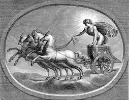
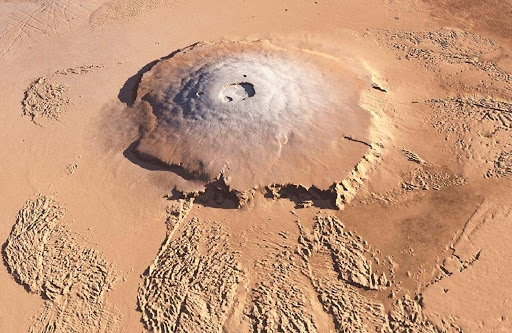

Surface Facts

Sound on Mars
Surface Facts
Sound on Mars |
Atmospheric Facts |
Miscallaneous Facts I |
Deimos Facts
|

|
Phobos Facts |
Miscallaneous Facts II |
Orbital Facts
|
Miscallaneous Facts III |